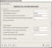
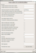
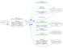
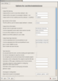
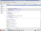
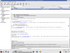
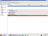
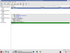
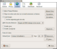
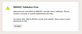

Tools
Tools
Is your domain secure?
Tools
| Project Links | |||||||||
|---|---|---|---|---|---|---|---|---|---|
| Download | SF Project Page | Mailing Lists | SVN | Bug Database | Test Zone | ||||
The goal of the DNSSEC-Tools project is to create a set of tools, patches, applications, wrappers, extensions, and plugins that will help ease the deployment of DNSSEC related technologies.
To contact the project developers, please write the dnssec-tools-users AT lists.sourceforge.net mailing list or submit bugs to the bug database.
The following table shows the software available in the DNSSEC-Tools package.
NOTE ABOUT THE GUIs VS COMMAND LINE USAGE:: Many of the tools in the table below have screen shots of their GUI interface. It is optional. A large number of the tools can be used with a normal command line options or (if you have the QWizard and Gtk2 perl modules installed) by simply launching it without arguments and a GUI wizard interface will appear to walk you through selecting the right options. Users can pick which mode is most comfortable for them.
Software components available in the dnssec-tools 0.9 release:
| Tool | Description | Screen-Shots |
|---|---|---|
| zonesigner: | A zone database signing utility that takes care of all necessary steps to sign and maintain a zone with as little hassle as possible. |  Example Output |
| donuts: | A dnslint like application to analyze zone files. Specifically tailored to dnssec but also tests for more general (non-dnssec) problems. | 
Example Output |
| donutsd: | A long running daemon that routinely runs donuts on a number of zones and e-mails the appropriate administrators. It is intened to notify admins when their zones are expiring or have other problems. |  |
| mapper: | Maps DNS realms color coding the results to allow for easy visual interpretation of the results. Color codes are based on record types and/or errors and warnings. |   |
| dnspktflow: | This tool, when combined with tethereal and graphviz, can trace tcpdump/tethereal network packet captures to visually diagram dns packet flows. It is very useful for debugging dns queries being issued to resolvers, etc. It outputs png files or MagicPoint packet-by-packet screen presentations. |  |
| maketestzone: | This tool generates a zone file(s) full of DNS records, then signs them, and then modifies them in various ways such that the final resulting file is a zone which contains DNSSEC "errors". This is useful for generating test data which DNSSEC aware software can be tested against. Our own test.dnssec-tools.org testzone is created using this package. |
 |
| ifup-dyn-dns: | A linux ifup addition that propagates current IP addresses into a live zone(s) using dynamic DNS. Allows for security to be used as well so transfers are properly authenticated. |
| libval and libsres: | These libraries implement DNSSEC aware DNS resolution APIs. They offer both simple to use replacements for existing common resolver functions (eg, val_gethostbyname is a replacement for gethostbyname) and more complete APIs to return the results of validation at each step in validating a DNSSEC chain up to a trust anchor. |
| Net::DNS::SEC::Tools::conf: | Parses Net::DNS::SEC::Tools specific configuration files |
| Net::DNS::SEC::Tools::keyrec: | Manipulates key records for the dnssec-tools that deal with keys |
| Net::DNS::SEC::Tools::tooloptions: | Implement option lists for perl based dnssec-tools for key manipulation. |
| Perl Module: Net::DNS::ZoneFile::Fast | We've taken over development of this module and have made it dnssec compliant so it can load zone files with DNSSEC records in them. |
| Sendmail / Postfix / libspf | A patch to validate SPF rules, incoming connections, etc against DNSsec records to ensure lookups within MTAs are not using spoofed DNS records. |   |
| Thunderbird | A plugin which automatically displays the DNSSEC validation headers in the Thunderbird E-Mail reader |   |
| FireFox & Mozilla | A patch which enables DNSSEC validation of DNS lookups in the firefox application suite (the firefox browser, mozilla, etc). |
  |
| LogWatch | A configuration plugin to logwatch to have logwatch perform DNSSEC parsing of system logging messages from running bind servers. (this patch is now included in the latest release of logwatch) | Example Output |
We have a number of Mailing Lists to which you can subscribe
This work is funded in part by the following organizations:

{kind=link}
{kind=link}
{kind=link}
{kind=link}
{kind=link}
{kind=link}
{kind=link}
{kind=link}
{kind=link}
{kind=link}